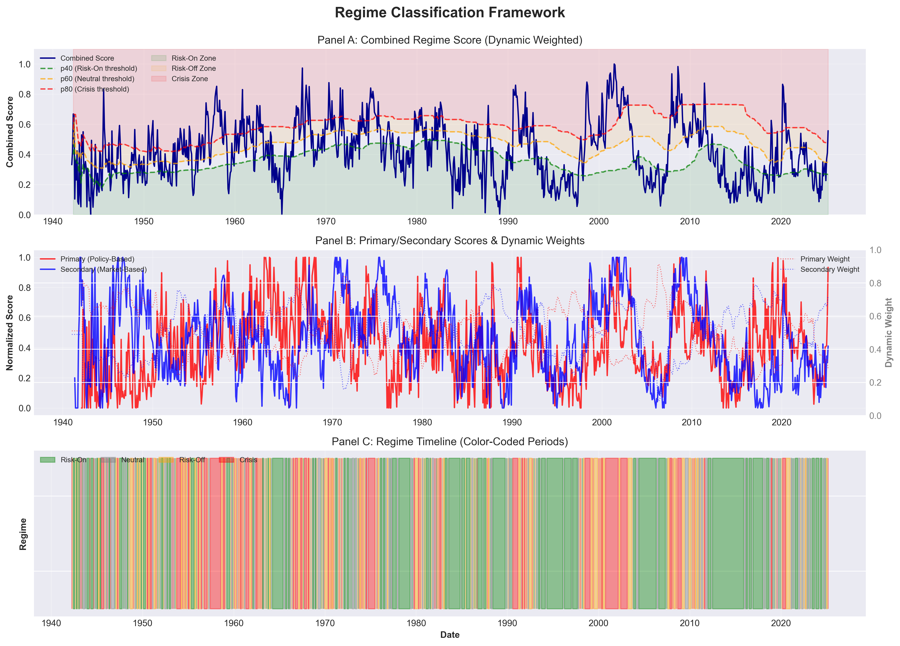
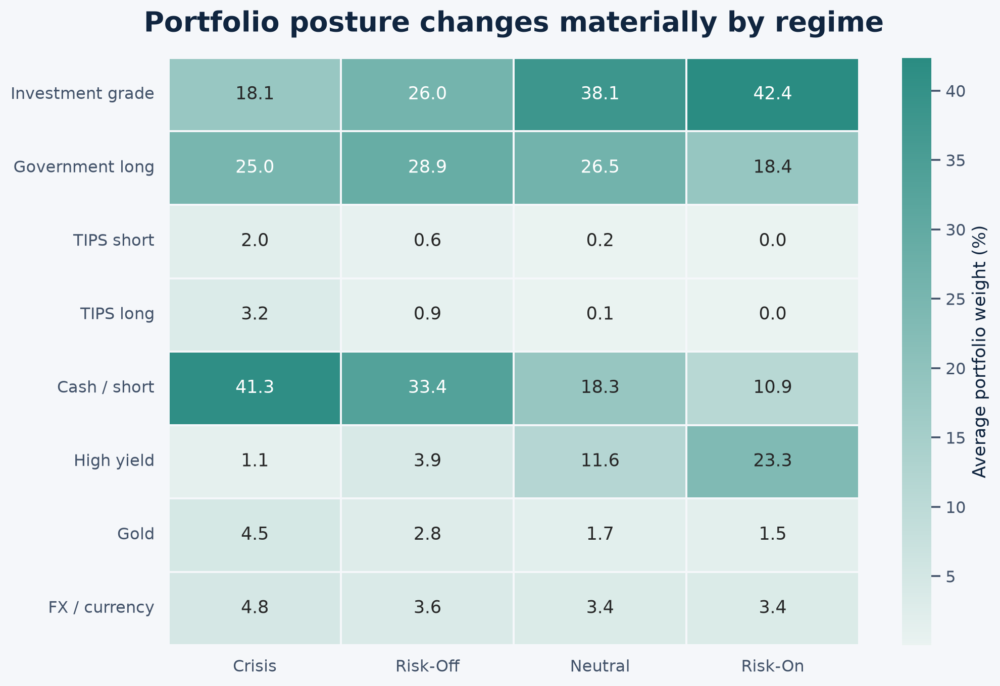
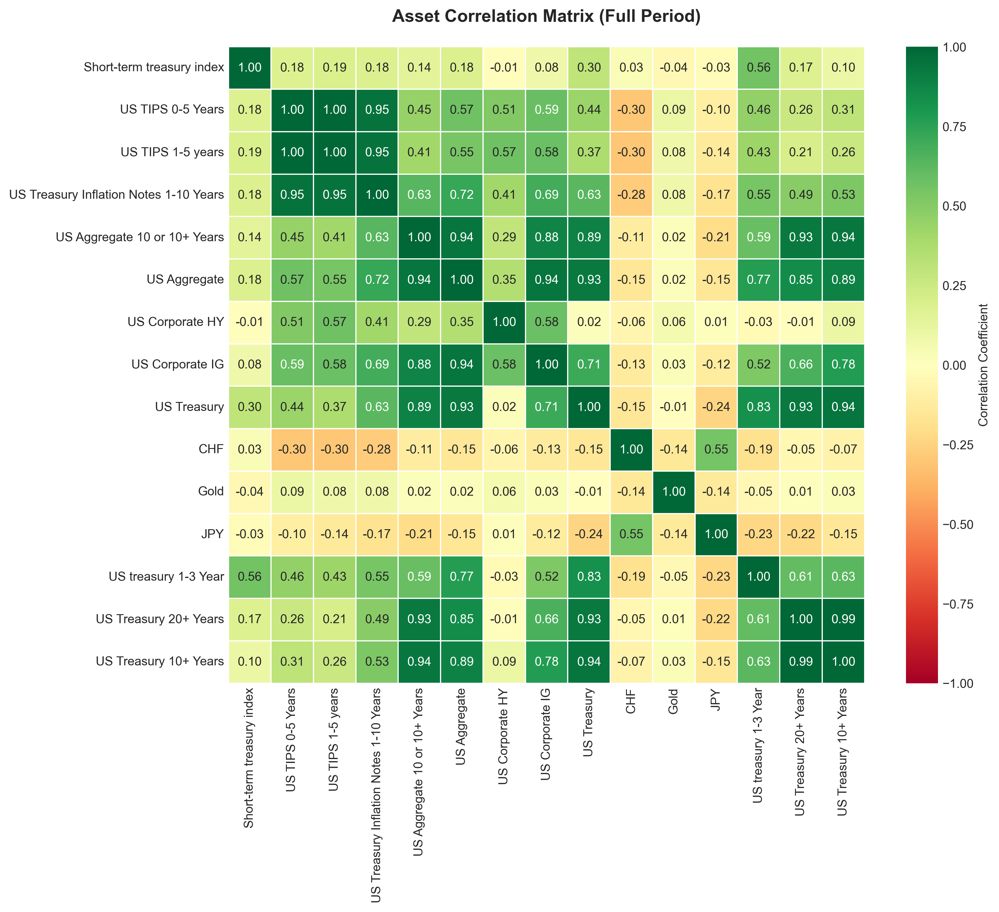
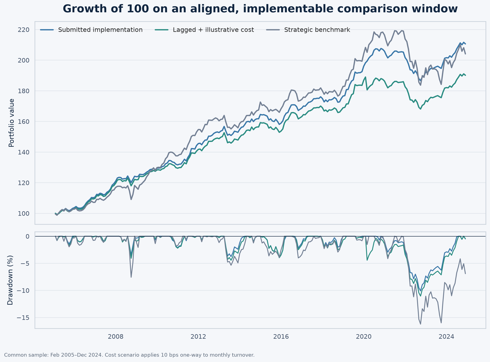
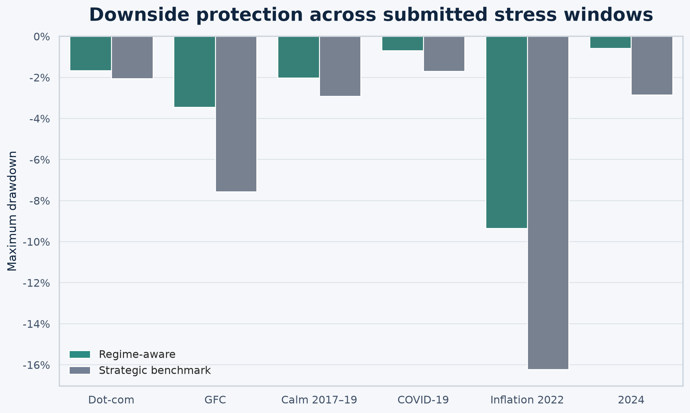

Fixed-income research · Asset allocation
Regime-Aware Fixed-Income Allocation
A transparent allocation framework that combines macro-policy conditions and market stress to adjust exposure across duration, credit, inflation protection, liquidity, and safe-haven assets—with an emphasis on portfolio governance and practical implementation.
Executive summary
A defensive allocation process for changing regimes
Primary mandate
The framework was designed to reduce downside risk relative to a static strategic allocation. In the submitted backtest, maximum drawdown was −10.1%, compared with −16.2% for the strategic benchmark.
Secondary mandate
The strategy sought positive risk-adjusted returns through interpretable regime signals and explicit risk controls. The submitted return-to-volatility ratio was 1.89 versus 1.07 for the benchmark.
Data coverage
- Analysis period
- 661 monthly observations
- Asset universe
- 15 return series
- Strategic categories
- 8 allocation sleeves
- Macro indicators
- 12 policy and market signals
- Regime states
- 4 classifications
- Historical tests
- 6 selected periods
Technical reference
Regime classification and allocation rules
A policy-based primary score and a market-based secondary score are dynamically weighted. Rolling percentile thresholds map the combined score to four states. Those states determine base allocations, which are then adjusted by volatility, drawdown, correlation, and tail-risk controls.
Regime classification thresholds
| Regime | Combined-score threshold | Historical frequency | Months |
|---|---|---|---|
| Crisis | Above 80th percentile | 20.9% | 208 |
| Risk-Off | 60th–80th percentile | 19.8% | 197 |
| Neutral | 40th–60th percentile | 18.8% | 187 |
| Risk-On | Below 40th percentile | 40.6% | 404 |
Frequencies refer to the longer regime-classification history, not the 661-month investable backtest window.

Average asset allocation by regime
| Asset class | Crisis | Risk-Off | Neutral | Risk-On |
|---|---|---|---|---|
| Cash / short | 41.3% | 33.4% | 18.3% | 10.9% |
| Government long | 25.0% | 28.9% | 26.5% | 18.4% |
| Investment grade | 18.1% | 26.0% | 38.1% | 42.4% |
| High yield | 1.1% | 3.9% | 11.6% | 23.3% |
| TIPS short | 2.0% | 0.6% | 0.2% | 0.04% |
| TIPS long | 3.2% | 0.9% | 0.1% | 0.02% |
| Gold | 4.5% | 2.8% | 1.7% | 1.5% |
| FX / currency | 4.8% | 3.6% | 3.4% | 3.4% |

Performance by regime
| Regime | Annualised return | Volatility | Return / volatility | Maximum drawdown |
|---|---|---|---|---|
| Crisis | 7.98% | 3.44% | 2.32 | −3.59% |
| Risk-Off | 5.58% | 2.96% | 1.88 | −3.55% |
| Neutral | 3.09% | 3.39% | 0.91 | −7.83% |
| Risk-On | 6.35% | 2.85% | 2.23 | −3.94% |

Backtest results
Submitted performance and implementation audit
Full-period submitted results
| Metric | Regime-aware | Strategic allocation | Difference |
|---|---|---|---|
| Annualised return | 5.89% | 5.18% | +0.71 pp |
| Annualised volatility | 3.11% | 4.85% | −1.74 pp |
| Return / volatility | 1.89 | 1.07 | +0.82 |
| Sortino ratio | 3.08 | 1.64 | +1.44 |
| Calmar ratio | 0.58 | 0.32 | +0.26 |
| Maximum drawdown | −10.10% | −16.23% | +6.13 pp |
| 95% conditional VaR | −1.53% | −2.69% | +1.16 pp |
| Monthly win rate | 73.2% | 66.3% | +6.9 pp |
| 12-month loss probability | 7.1% | 13.2% | −6.1 pp |
Conservative implementation check
Applying a one-month signal lag, limiting the comparison to February 2005–December 2024, and charging an illustrative 10 bp one-way cost lowers the strategy’s return / volatility ratio to 0.99. Maximum drawdown remains shallower than the benchmark at −11.05% versus −16.23%.

Historical stress testing
Performance across six market environments
Test periods
| Period | Dates | Duration | Purpose |
|---|---|---|---|
| Dot-com bust | Jan 2000–Dec 2002 | 36 months | Equity and credit repricing |
| Global financial crisis | Jul 2007–Dec 2009 | 30 months | Systemic liquidity shock |
| Calm period | Jan 2017–Dec 2019 | 36 months | Low-volatility control window |
| COVID-19 | Jan 2020–Dec 2020 | 12 months | Rapid risk-off and policy response |
| Inflation surge | Jul 2021–Dec 2022 | 18 months | Rates and inflation shock |
| 2024 volatility | Jan 2024–Dec 2024 | 12 months | Recent out-of-sample-style review |
Performance by historical period
| Period | Portfolio | Cumulative return | Annualised return | Return / volatility | Maximum drawdown |
|---|---|---|---|---|---|
| Dot-com bust | Regime-aware | 25.8% | 7.7% | 2.92 | −1.7% |
| Strategic allocation | 26.5% | 7.9% | 2.22 | −2.1% | |
| Global financial crisis | Regime-aware | 14.7% | 5.5% | 1.67 | −3.5% |
| Strategic allocation | 17.9% | 6.8% | 1.09 | −7.6% | |
| Calm 2017–2019 | Regime-aware | 14.6% | 4.6% | 1.61 | −2.0% |
| Strategic allocation | 14.8% | 4.7% | 1.35 | −2.9% | |
| COVID-19 | Regime-aware | 7.6% | 7.3% | 3.00 | −0.7% |
| Strategic allocation | 9.5% | 9.3% | 1.90 | −1.7% | |
| Inflation 2022 | Regime-aware | −7.4% | −5.0% | −1.56 | −9.4% |
| Strategic allocation | −12.6% | −8.7% | −1.20 | −16.2% | |
| 2024 | Regime-aware | 4.7% | 4.6% | 2.08 | −0.6% |
| Strategic allocation | 1.8% | 1.9% | 0.34 | −2.9% |

Complete presentation
Research, architecture, validation, and implementation
The original 44-page team presentation is included in full.
Download presentation (PDF)